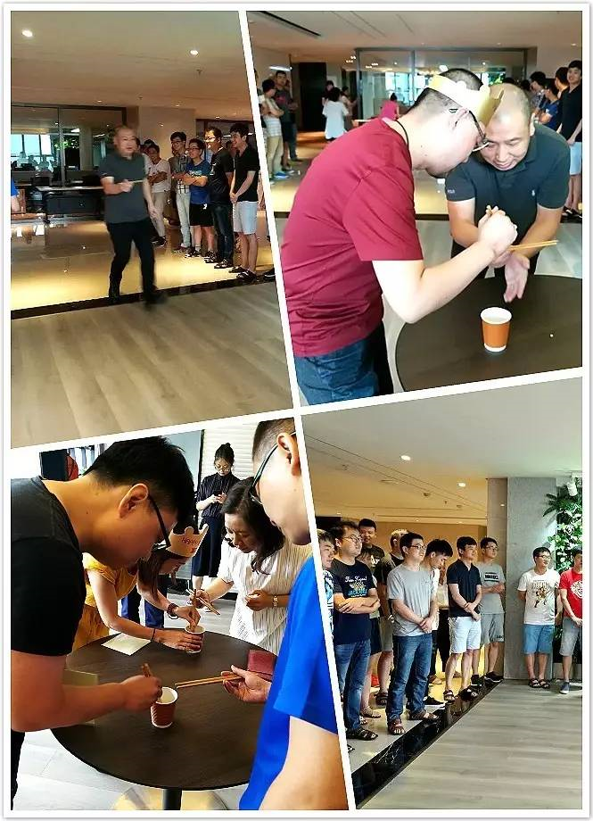

每一个生日，都是属于自己的独家记忆，值得永久珍藏；每一个庆祝生日的美好瞬间，都伴随着欢声笑语；每一声诚挚的祝福，都是发自心底的祝愿。陕西万盛达每月生日会，只为给你最温暖的回忆。
6月30日上午11:00，陕西万盛达6月生日会在公司绿植区如期举行，董事长李刚、总裁陈凯应邀出席了本次生日会。
伴随着熟悉的生日歌旋律，李总作为本月寿星主角为生日会致辞，并亲自点亮生日蜡烛，与其他两位寿星共同许下生日愿望。陈总则亲手为寿星们佩戴生日帽，送上生日贺卡和贴心礼物，让他们倍感温馨与感动。
接下来的游戏互动环节“豆子也疯狂”则令生日会气氛嗨到极点。一颗小小的黄豆被细细的筷子夹起，转送到另一双筷子上，再被运送到10米开外的收集点。既比拼筷子功底，又考验合作精神，整个过程紧张而又刺激。
李总作为本月寿星义不容辞地加入到游戏队伍中来，夹起黄豆来全神贯注。作为李总的游戏搭档，陈总也一改往日严肃画风，化身追风少年，往来运豆，火力全开。两位老总以拼劲十足的游戏精神和满满的亲和力，瞬间圈粉无数，惹得围观的吃瓜群众们也跃跃欲试！
如被夏日热情的骄阳点燃，生日会变成了一场活力秀，现场人声鼎沸、欢笑不断！
万盛达每月为员工庆祝生日虽说是一个微小的举动，但是倾注了公司对员工深切的关爱。对于生日的主角们而言，这可能是他们在人生中度过的无数生日中的一个。如果在回想起自己生命中难忘的生日时，这一刻能悄然浮现，那么无论对公司还是个人，都将是一种欣慰！
同心动力，笃信尚行，让我们因身为万盛达人感到幸福而奋斗！